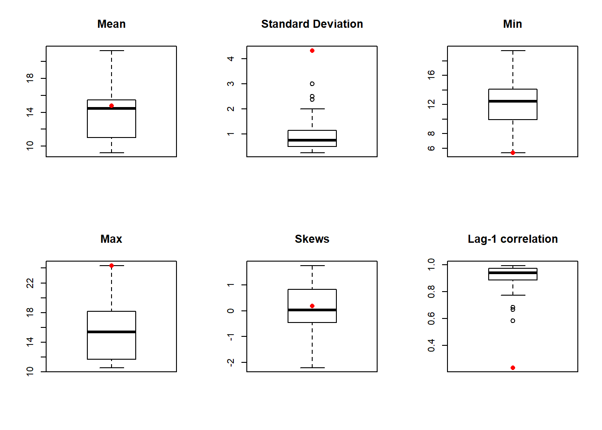
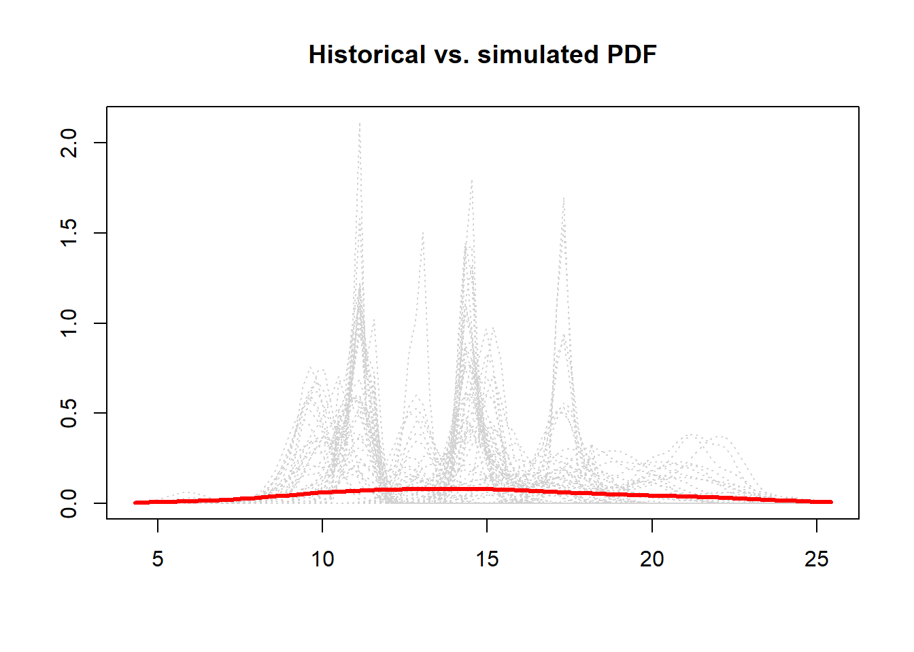

Exercise 2 Nonparametric seasonal lag-1 model
Fit a nonparametric seasonal lag-1 model and repeat [exercise] 1. You can use either the the K-nn bootstrap technique or LOCFIT/residual resampling and repeat 1.
2.1 Generate 250 simulations each of same length as the historical data.
# Load libraries
libr=c("magrittr","sm","stats","moments")
options(warn=1)
suppressPackageStartupMessages(lapply(libr, require, character.only = TRUE))# import and set up flow data
flow = read.table(
"http://civil.colorado.edu/~balajir/CVEN6833/HWs/HW-3-2018/LeesFerry-monflows-1906-2016.txt")
flow = flow[,2:13] %>% `rownames<-`(flow[,1]) %>%
setNames(.,c("jan","feb","mar","apr","may","jun",
"jul","aug","sep","oct","nov","dec")) %>%
{./10^6} # convert AF to MAF
flow$year = rowSums(flow) # add year in 13th column
head(flow,n=1L) # show values## jan feb mar apr may jun jul aug
## 1906 0.244314 0.292534 0.678174 1.20464 3.635101 5.014167 2.95046 1.605086
## sep oct nov dec year
## 1906 1.503159 0.739807 0.503006 0.353312 18.72376tail(flow,n=1L)## jan feb mar apr may jun jul
## 2016 0.360703 0.448837 0.67914 1.099567 2.967581 3.910287 1.342044
## aug sep oct nov dec year
## 2016 0.609946 0.485507 0.546633 0.426289 0.345163 13.2217# Simulations (innovation defines st. distribution of error)
nsim=100 # number of simulations
nsim1=nsim+1
nyrs=length(flow[,1]) # years
nyrs1 = nyrs-1
N=nyrs*12 # time series for monthly flow
armean=matrix(0,nsim,12) #matrices that store the statistics
arstdev=matrix(0,nsim,12)
arcor=matrix(0,nsim,12)
arskw=matrix(0,nsim,12)
armax=matrix(0,nsim,12)
armin=matrix(0,nsim,12)
ar.year.stat=matrix(NA,ncol = 6,nrow = nsim) # year statistics
colnames(ar.year.stat) = c("mean","stdev","min","max","skew","cor")
# Points where May PDF is evaluated
xeval=seq(min(flow$may)-0.25*sd(flow$may),
max(flow$may)+0.25*sd(flow$may),length=100)
simpdf=matrix(0,nrow=nsim,ncol=100) # Array to store May simulated PDF
# Points where anual PDF is evaluated
yeval=seq(min(flow$year)-0.25*sd(flow$year),
max(flow$year)+0.25*sd(flow$year),length=100)
year.pdf=matrix(0,nrow=nsim,ncol=100) # Array to store anual simulated PDF
# # The anual flow is modeled using single AR(1) model
# ar.year=ar(flow$year,order.max = 1) #AR order 1, MA
# Fitting Np-AR-1 model
K=round(sqrt(nyrs)) #number of nearest neighbors
W= 1:K %>% {1/.} %>% {./sum(.)} %>% cumsum(.) # weight function
for (isim in 1:nsim) {
i=round(runif(1,2,nyrs)) # initial random year
zsim = 1:N # n of monthly flow time series
zsim[1] = flow[i,1] # initial flow (Jan of year i)
xp = zsim[1] # Previous value initialization
# Monthly flow simulations
for (j in 2:N) {
mo = j%%12 # month we are simulating
imon=ifelse(mo==0,12,mo)
if (mo != 1){ # if mo = 0 (Dec)
data = flow[,1:12] # data is the same as test (Jan - Dec)
} else { # Jan
data = cbind(flow[2:nyrs,1],flow[1:nyrs1,2:12])
}
# if mo = 1 (JAn), 1st col of data will be March, last col will be Feb
mo1 = mo-1
if(mo == 0)mo1=11
if(mo == 1)mo1=12
xdist = order(abs(xp - data[,mo1]))
# if (mo == 1) {
# xdist = order(abs(xp - data[,mo1]))}
# if (mo >1) {
# xx=rbind(xp, data[,(12-ilag):11])
# xdist = order(as.matrix(dist(xx))[1,2:nyrs+1]) }
xx=runif(1,0,1) # generate random number
xy=c(xx,W)
xx=rank(xy) # get rank with respect to W
i1=xdist[xx[1]] # distance order at given rank
zsim[j]=data[i1,imon] # select data at given distance
xp = zsim[j] # store previous year for next it.
} # end j loop
simdismon = matrix(zsim, ncol=12, byrow = TRUE) # makes a 12 column matrix with jan thru dec
maysim = simdismon[,5]
simpdf[isim,]=sm.density(maysim,eval.points=xeval,display="none")$estimate
# Fill statistics for each month
for(j in 1:12){
armean[isim,j]=mean(simdismon[,j])
armax[isim,j]=max(simdismon[,j])
armin[isim,j]=min(simdismon[,j])
arstdev[isim,j]=sd(simdismon[,j])
arskw[isim,j]=skewness(simdismon[,j])
}
arcor[isim,1]=cor(simdismon[-nyrs,12],simdismon[2:nyrs,1]) #cor dec-jan
for(j in 2:12){ # rest of pairs
j1=j-1
arcor[isim,j]=cor(simdismon[,j],simdismon[,j1])
}
# Anual flow simulations
y.sim = 1:nyrs # n of anual flow time series
y.sim[1] = flow[i,"year"] # initial flow (Year i)
y.p = y.sim[1] # Previous value initialization
y.data=flow$year # dataset is fixed for anual ts.
for(j in 2:nyrs){
y.dist = order(abs(y.p - y.data))
i1 = runif(1,0,1) %>% c(.,W) %>% rank(.) %>% {y.dist[.[1]]}
y.sim[j]=y.data[i1] # select y.data at given distance
y.p = y.sim[j] # store previous year for next it.
}
# Get anual PDF
year.pdf[isim,]=sm.density(y.sim,eval.points=
yeval,display="none")$estimate
# Calculate statistics
ar.year.stat[isim,"mean"]=mean(y.sim)
ar.year.stat[isim,"max"]=max(y.sim)
ar.year.stat[isim,"min"]=min(y.sim)
ar.year.stat[isim,"stdev"]=sd(y.sim)
ar.year.stat[isim,"skew"]=skewness(y.sim)
ar.year.stat[isim,"cor"]=cor(y.sim[-nyrs],y.sim[2:nyrs])
} # end isim loopWe add the statistics from historical data in the first row of the tables
# Compute statistics from the historical data.
obsmean=1:12
obsstdev=1:12
obscor=1:12
obsskw=1:12
obsmax=1:12
obsmin=1:12
for(i in 1:12){
obsmax[i]=max(flow[,i])
obsmin[i]=min(flow[,i])
obsmean[i]=mean(flow[,i])
obsstdev[i]=sd(flow[,i])
obsskw[i]=skewness(flow[,i])
}
obscor[1]= cor(flow[-nyrs,12], flow[2:nyrs,1])
for(i in 2:12){
i1=i-1
obscor[i]=cor(flow[,i], flow[,i1])
}
# bind the stats of the historic data at the top..
armean=rbind(obsmean,armean)
arstdev=rbind(obsstdev,arstdev)
arskw=rbind(obsskw,arskw)
arcor=rbind(obscor,arcor)
armax=rbind(obsmax,armax)
armin=rbind(obsmin,armin)
# anual flow binding
year.stat=c(mean(flow$year),sd(flow$year),min(flow$year),
max(flow$year),skewness(flow$year),
cor(flow$year[-nyrs],flow$year[2:nyrs]))
ar.year.stat = rbind(year.stat,ar.year.stat)2.2 Plot statistics from simulations
- Create boxplots of annual and monthly, mean, variance, skew, lag-1 correlation, minimum, maximum and PDFs of May and annual flows. Comment on what you observe and also on why some of the monthly statistics are not captured.
# function to plot boxplots with the structure: hist. in first row
plot.bp = function(matrix,name){
xmeans=as.matrix(matrix)
n=length(xmeans[,1])
xmeans1=as.matrix(xmeans[2:n,]) #the first row is the original data
xs=1:12
zz=boxplot(split(xmeans1,col(xmeans1)), plot=F, cex=1.0)
zz$names=rep("",length(zz$names))
z1=bxp(zz,ylim=range(xmeans),xlab="",ylab="",cex=1.00)
points(z1,xmeans[1,],pch=16, col="red")
lines(z1,xmeans[1,],pch=16, col="gray")
title(main=name)
}The plots for the statistics of the simulated time series (shown as boxplots) vs. the historical data (shown as points and lines) are reproduced below:
par(mfrow=c(3,2))
plot.bp(armean,"Mean")
plot.bp(arstdev,"Standard Deviation")
plot.bp(armin,"Min")
plot.bp(armax,"Max")
plot.bp(arskw,"Skews")
plot.bp(arcor,"Lag-1 correlation")All the statistics are well fitted with respect the historical data.
The anual statistics are similarly represented below:
par(mfrow=c(2,3))
plot.bp(ar.year.stat[,"mean"],"Mean")
plot.bp(ar.year.stat[,"stdev"],"Standard Deviation")
plot.bp(ar.year.stat[,"min"],"Min")
plot.bp(ar.year.stat[,"max"],"Max")
plot.bp(ar.year.stat[,"skew"],"Skews")
plot.bp(ar.year.stat[,"cor"],"Lag-1 correlation")
For the anual flow, this is no longer true. Some statistics are not poorly fitted.
xdensityorig = flow$may %>% sm.density(.,eval.points=xeval,display="none") %>%
.$estimate
plot.pdf = function(eval,histPDF,simPDF){
xeval = eval
plot(xeval,histPDF,pch=".",col="red",ylim=range(simPDF,histPDF),
xlab="",ylab = "")
for(i in 1:nsim)lines(xeval,simPDF[i,],col='lightgrey',lty=3)
lines(xeval,histPDF,lwd=3,col="red")
title(main="Historical vs. simulated PDF")
}plot.pdf(xeval,xdensityorig,simpdf)
The simulated PDF shows the bimodal behavior, and does not respond to a probabilistic distribution, as it happened to parametric AR.
year.density = flow$year %>% sm.density(.,eval.points=yeval,
display="none") %>% .$estimateplot.pdf(yeval,year.density,year.pdf)
Many results are repeated (only 111 values for 100 simulations of 111 time series), creating a crisp PDF. Not realistic.
2.3 Advantages/disadvantages with a nonparametric approach.
When the dataset is large enough, the fitted PDF and statistics over perform the parametric modelling.
When the opposite occurs, many values are repeatedly picked, resulting in biased PDF and statistics.